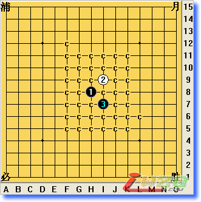

浦月1打完美必胜谱
首页
定式及研究
#1 浦月1打完美必胜谱 作者：有志青年 发表时间：2008-2-26 12:43:48
点击下载
#2 Re:浦月1打完美必胜谱 作者：披星戴月 发表时间：2008-2-26 13:06:55
解压后是一堆乱码啊？
#3 Re:Re:浦月1打完美必胜谱 作者：有志青年 发表时间：2008-2-26 13:14:43

没有问题！
#4 Re:浦月1打完美必胜谱 作者：竹子 发表时间：2008-2-26 16:15:04
期待浦月两打完美必胜谱
#5 Re:浦月1打完美必胜谱 作者：逆刃 发表时间：2008-2-26 16:31:59
这个应该就是两打的。
#6 Re:浦月1打完美必胜谱 作者：逆刃 发表时间：2008-2-26 16:34:49
两打早就有了的啊。。估计不少人都有吧。
#7 Re:浦月1打完美必胜谱 作者：有志青年 发表时间：2008-2-26 16:38:35
竹子说话太狡猾
#8 Re:浦月1打完美必胜谱 作者：披星戴月 发表时间：2008-2-27 17:55:26
是不是需要用什么软件来解压啊？


#9 Re:浦月1打完美必胜谱 作者：有志青年 发表时间：2008-2-27 17:57:36
用打谱软件呀。
#10 Re:Re:浦月1打完美必胜谱 作者：竹子 发表时间：2008-2-28 16:23:55
引用：
原文由 有志青年 发表于 2008-2-26 16:38:35 :
竹子说话太狡猾

期待19路盘地毯终结谱
#11 Re:浦月1打完美必胜谱 作者：糖醋小排 发表时间：2008-5-3 19:38:44
俺来试试!
#12 Re:浦月1打完美必胜谱 作者：棋谈人生 发表时间：2008-5-6 2:36:57
谢谢分享 正在学习 辛苦了